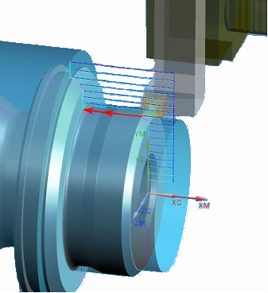

The calculation of cut levels is improved to provide a more efficient tool path. At each pass during the roughing operation, NX either uses a fixed depth of cut value that you specify, or it calculates a variable depth of cut value based on minimum and maximum cut values that you specify.

|
Application |
Manufacturing |
|
Prerequisite |
Rough Turn OD or Rough Turn ID operation |
|
Location in dialog box |
[Operation] dialog box→Cut Strategy group→Strategy list→Ramping Zig or Ramping Zig Zag |